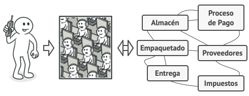

Facade
Facade es un patrón de diseño estructural que proporciona una interfaz simplificada a una biblioteca, un framework o cualquier otro grupo complejo de clases.
Cuando diseñamos una aplicación, es correcto, lógico y usual crear subdivisiones en el sistema para organizar nuestro código, utilizando diferentes criterios, ya sean por funcionalidad o conceptuales.
Facade (fachada) nos permite crear una interfaz que unifique el acceso a dichos subsistemas, de modo que simplifica el acceso y lo hace más fácil de usar.
Podemos verlo como un nivel superior en la abstracción de nuestro código, donde para realizar complicadas o sencillas operaciones solo necesitamos tener acceso a la clase fachada para ejecutar nuestro programa.

Problema
Imagina que debes lograr que tu código trabaje con un amplio grupo de objetos que pertenecen a una sofisticada biblioteca o framework. Normalmente, debes inicializar todos esos objetos, llevar un registro de las dependencias, ejecutar los métodos en el orden correcto y así sucesivamente.
Como resultado, la lógica de negocio de tus clases se vería estrechamente acoplada a los detalles de implementación de las clases de terceros, haciéndola difícil de comprender y mantener.
Solución
Una fachada es una clase que proporciona una interfaz simple a un subsistema complejo que contiene muchas partes móviles. Una fachada puede proporcionar una funcionalidad limitada en comparación con trabajar directamente con el subsistema. Sin embargo, tan solo incluye las funciones realmente importantes para los clientes.
Tener una fachada resulta útil cuando tienes que integrar tu aplicación con una biblioteca sofisticada con decenas de funciones, de la cual sólo necesitas una pequeña parte
Por ejemplo, una aplicación que sube breves vídeos divertidos de gatos a las redes sociales, podría potencialmente utilizar una biblioteca de conversión de vídeo profesional. Sin embargo, lo único que necesita en realidad es una clase con el método simple codificar(nombreDelArchivo, formato). Una vez que crees dicha clase y la conectes con la biblioteca de conversión de vídeo, tendrás tu primera fachada.
Estructura

Ejemplo del mundo real
Cuando llamas a una tienda para hacer un pedido por teléfono, un operador es tu fachada a todos los servicios y departamentos de la tienda. El operador te proporciona una sencilla interfaz de voz al sistema de pedidos, pasarelas de pago y varios servicios de entrega.
En lugar de hacer que tu código trabaje con decenas de las clases del framework directamente, creas una clase fachada que encapsula esa funcionalidad y la esconde del resto del código. Esta estructura también te ayuda a minimizar el esfuerzo de actualizar a futuras versiones del framework o de sustituirlo por otro. Lo único que tendrías que cambiar en la aplicación es la implementación de los métodos de la fachada.
Ejemplo de uso
En este ejemplo, el patrón Facade simplifica la interacción con un framework complejo de conversión de vídeo.